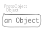
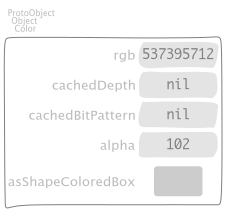
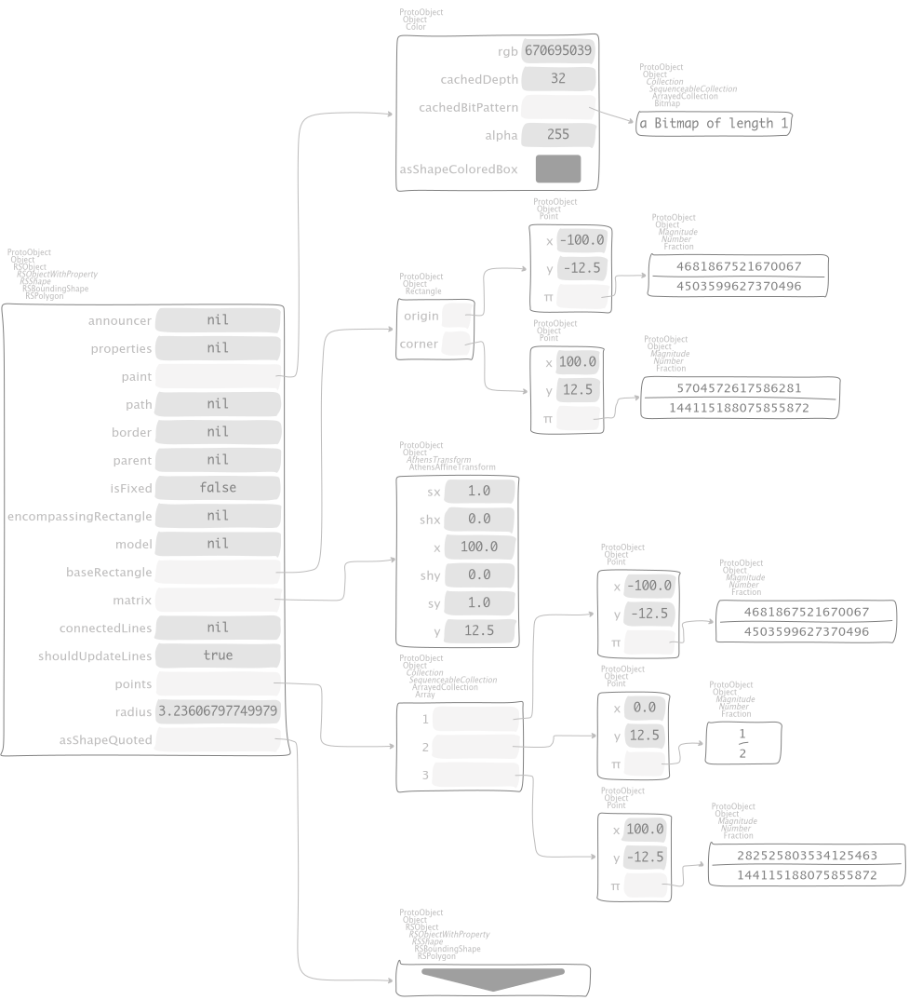

Object model¶
For a fistful of objects¶
An Object, simply¶
"EssentialsObjectTest, protocol tests"
testInspectObject
^ self exportSlotsGraphOf: Object new

nil, even more simpler¶
"EssentialsObjectTest, protocol tests"
testInspectNil
^ self exportSlotsGraphOf: nil

true and false¶
"EssentialsObjectTest, protocol tests"
testInspectTrueAndFalse
^ self
exportSlotsGraphOf: (Array with: true with: false)
slotDescriptorsContext:
(SlotDescriptorsVisitor new collect: [ :aDescriptor |
aDescriptor inline: false ])


The Color gray, translucent¶
"EssentialsObjectTest, protocol tests"
testInspectColorGray
^ self exportSlotsGraphOf: Color gray translucent

A RSShape of a polygon, quoting itself¶
"EssentialsObjectTest, protocol tests"
testInspectRSPolygon
^ self exportSlotsGraphOf: (RSPolygon new
points: {
(0 @ 0).
(100 @ 25).
(200 @ 0) };
cornerRadii: Float goldenRatio double;
yourself)

Classes and superclasses of Object and Trait¶
"EssentialsObjectTest, protocol tests"
testInspectObjectModel
^ self exportSlotsGraphOf: {
Object.
Trait }

For a few objects more¶
A Context¶
"EssentialsObjectTest, protocol tests"
testInspectContext
^ self exportSlotsGraphOf: thisContext

A Git repository¶
"EssentialsObjectTest, protocol tests"
testInspectIceRepository
^ self exportSlotsGraphOf:
(IceRepository registry detect: [ :each |
each name = 'Containers-HeapQ' ])

"EssentialsObjectTest, protocol tests"
testInspectIceRepositoryCommitsGraph
^ self
exportShapeOf: self testInspectIceRepository
accessorBlock: #asShapeCommitsGraph